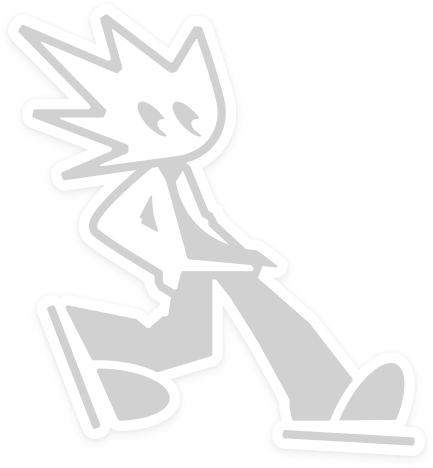
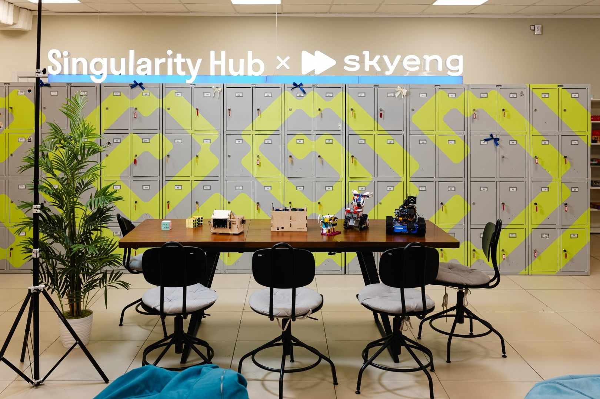
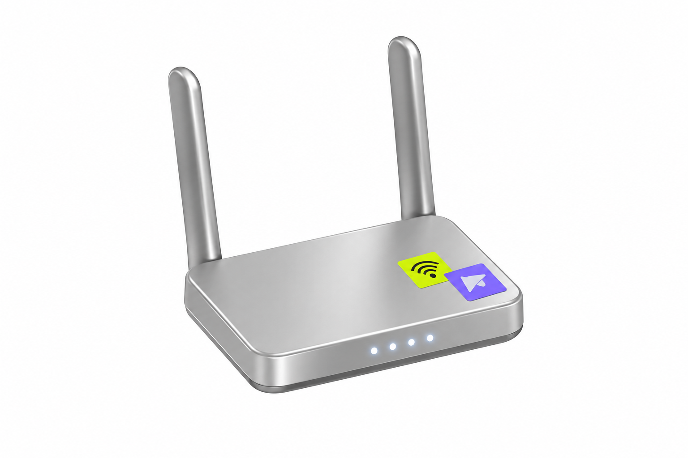

Следующая пара:
Навигатор колледжа
Точка навигацииЗагружаем карту…
Прототип Карта демонстрационная, источник расписания указан в форме. Перед запуском в корпусе маршруты нужно проверить физическим обходом.

Построим маршрут до нужного кабинета, рабочего места или зоны встречи. Отсканируй ближайший QR-код на стене, чтобы определить твоё местоположение.

Местоположение определено.
Куда хочешь отправиться?
Следующая пара:

Прототип Карта демонстрационная, источник расписания указан в форме. Перед запуском в корпусе маршруты нужно проверить физическим обходом.